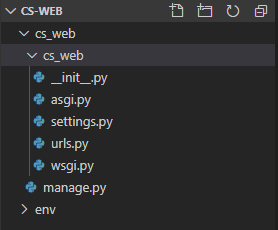
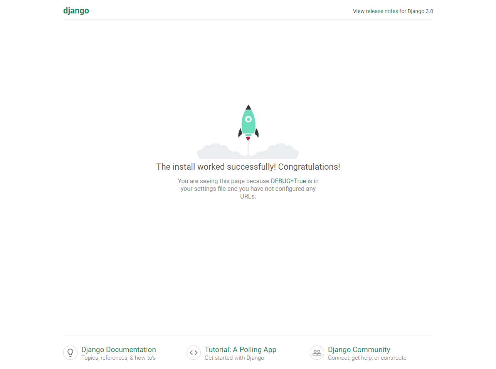

Django 02. 가상환경 설정, Django 설치
Python Virtualenv로 가상환경을 구축하고 Django프레임워크를 설치합니다.
1. Python Virtualenv 설치
python 가상환경 pip인 virtualenv를 설치합니다.
설치환경은 window, python 버전은 3.7.4 입니다.
1 | $ pip install virtualenv |
Cs-web이란 프로젝트 폴더를 생성한 후 env란 이름의 가상환경폴더를 생성해줍니다.
1 | $ cd Cs-web |
window환경에서 가상환경을 실행하기 위해 설치된 django_env 폴더의 Scripts 경로로 이동 후 activate 명령을 통해 가상환경을 실행합니다.
1 | $ cd env |
아래와 같이 가상환경이 실행된 것을 알 수 있습니다. 가상환경에서 빠져나오는 명령어는 deactivate입니다.
1 | (env) C:\Users\<username>\desktop\Cs-Web\env\Scripts |
2. Django 설치
현재 제가 사용하고 있는 django 버전은 3.0.2이므로 그대로 설치해주도록 하겠습니다.
1 | $ pip insatll django==3.0.2 |
2020-03-23 기준으로 django 최신버전은 3.0.4 입니다. Django 최신버전 확인
2버전에서 3버전으로 넘어오면서 MariaDB와 ASGI를 지원, 그 밖에 필터표현식, 자잘한 변경사항이 추가되었습니다.
프로젝트 진행중에 구글링을 많이 활용했었는데, django 3버전 미만의 소스코드들이 실행이 되지 않는 상황이 종종 있었습니다. 뿐만 아니라 django-multiselectfield 등과 같은 유용한 패키지들이 django 버전에 맞추어 업데이트가 되지 않는 상황이라 굳이 3버전을 설치할 필요는 없습니다.
3. Django 프로젝트 생성
cs_web 이름의 django 프로젝트를 생성하는 명령은 다음과 같습니다.
1 | $ django-admin startproject cs_web |
아래와 같은 구조로 생성되게 됩니다.

cs_web 경로로 이동 후 django 서버를 실행해봅니다.
django 서버 실행 명령어인 manage.py runserver는 개발환경에서의 django 테스트앱서버를 실행하는 것으로 프로젝트 완성 후 배포할 때에는 nginx, apache등을 사용해 웹서버를 분리 후 배포하는 것을 권장하고 있습니다.
1 | $ cd cs_web |
127.0.0.1로 접속하면 다음과 같은 django 테스트서버가 실행된 것을 확인할 수 있습니다.
